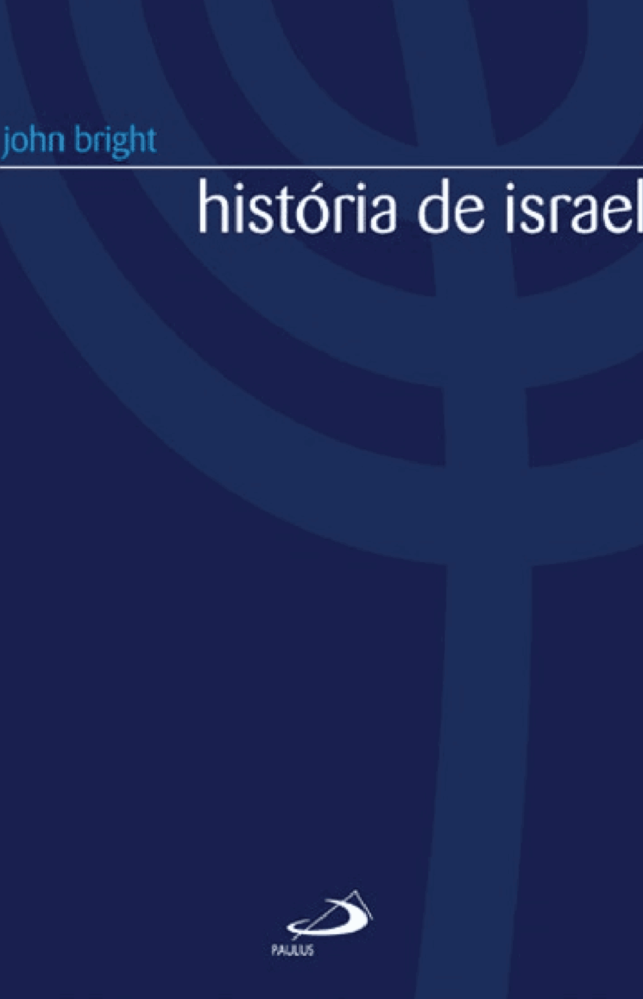

Referência de estudo
Material baseado em História de Israel
Este artigo tem como referência o livro História de Israel.
Ver este livro na seção de livrosOs últimos profetas de Judá transformaram a crise em uma questão de consciência: não bastava saber que o juízo vinha; era preciso saber como viver diante dele.
1. Habacuque e a pergunta diante do juízo
Habacuque é o profeta da pergunta. Ele se coloca diante da violência, da injustiça e da destruição e pergunta: como pode o Senhor agir com tão pouco cuidado diante de uma realidade tão quebrada? Hab 1,2-4 mostra o impulso da pergunta. O texto revela que a violência parece dominar a história, e que a injustiça se tornou a lógica do mundo.
A resposta divina não anula a dor, mas lhe dá sentido. Hab 1,12-17 e Hab 2,4 mostram que o Senhor não deixa impune a violência e que “o justo viverá pela sua fé”. Isso é fundamental: em tempos de juízo, a fidelidade não é medida pelo poder externo, mas pela postura do coração diante de Deus.
2. Jeremias: a palavra do juízo que não se cala
Jeremias é o grande profeta do anúncio do juízo. Nascido em Anatote, era homem de um sacerdócio que conhecia a tradição do culto e da Aliança. Mas o seu coração foi despertado para a gravidade de uma realidade que todas as instituições haviam tentado esconder: Judá não era mais um povo fiel; era um povo que vivia em mentira e em falsas promessas. Jr 7,4-15 é uma das passagens mais decisivas: o profeta rejeita a ideia de que o simples fato de ter o Templo garante a presença de Deus.
O profeta não se contentou em denunciar o paganismo externo; ele viu que a realidade mais grave era o culto formal e a segurança equivocada. Jr 17,1-4 e Jr 20,7-9 expressam a dor do homem que não pode calar a palavra de Deus. Jeremias percebeu que o povo queria paz sem conversão e segurança sem obediência, e por isso sua mensagem foi dura.
3. A aliança e a falsa segurança
O ponto central da mensagem de Jeremias era a crítica à falsa ideia de que a Aliança garantia a inviolabilidade de Jerusalém. O povo criara um sistema de segurança que dependia do Templo e da tradição, e não da fidelidade de coração. Jr 7,4-15 e Jr 23,16-22 mostram que o discurso de paz era, em muitos casos, apenas uma máscara para ocultar a corrupção.
A reflexão se torna clara: qual a função da santidade se a comunidade não vive a verdade da Aliança? Para Jeremias, a resposta é simples: a santidade não pode ser um símbolo externo. Ela exige conversão. O povo de Judá não podia mais viver de uma religião de aparência; era preciso voltar-se ao Senhor com o coração.
4. O exílio e a nova aliança
A teologia de Jeremias assume importância especial quando se trata do exílio. Ele afirmava que a Babilônia era uma disciplina de Jahweh, e que o povo não podia interpretar sua realidade apenas como derrota militar. Jr 29,10-14 mostra que o exílio era um processo de reorientação e de purificação. O povo precisaria aprender que sua verdadeira identidade não estava na cidade ou no Templo como instituições; estava em Deus.
Jeremias foi também o profeta que anunciou a nova aliança. Jr 31,31-34 apresenta uma aliança escrita no coração, em que a fidelidade não seria apenas externa, mas interior. Isso é decisivo: o coração de um povo não deve ser formado somente por ritual, mas por conhecimento de Deus. A verdadeira restauração vem da conversão do coração e não apenas da recuperação de estruturas antigas.
5. Habacuque e Jeremias: duas respostas diante do juízo
Habacuque e Jeremias dão respostas diferentes, mas complementares, ao mesmo problema: como viver em um tempo de juízo? Habacuque pergunta e recebe a resposta de que “o justo viverá pela sua fé”; Jeremias anuncia a verdade dura do juízo, mas também insiste na necessidade de submissão à disciplina de Deus e na esperança de restauração. Hab 2,4 e Jr 31,31-34 mostram que o futuro de Judá não está em uma teoria religiosa vazia, mas numa vida marcada pela fidelidade interior.
Juntos, os dois testemunham que a crise não apaga a soberania de Deus, nem o seu cuidado. O juízo é o caminho de purificação, mas a fé do justo continua sendo a última e mais profunda fonte de esperança. Em última instância, mesmo em tempos de dor, a fé no Senhor sustenta o povo que escolhe viver pela verdade.